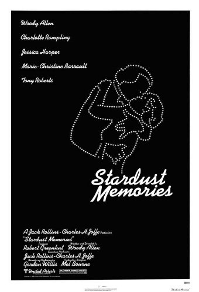
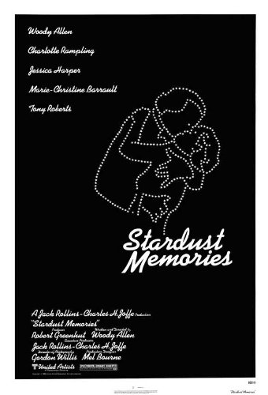
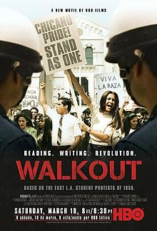
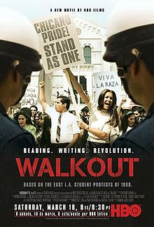

 



Writers/directors I admire: Fernando Meirelles, Woody Allen, Robert Altman, Alfred Hitchcock, Hayao Miyazaki, Akira Kurosawa, Ousmane Sembène, Michael Arndt, Kinji Fukusaku, Quentin Tarantino, Steve Zaillian, Zacharias Kunuk, William Finkelstein, Joel & Ethan Coen, Bong Joon Ho, Fritz Lang, Ang Lee, Mike Newell, David Fincher, Dario Argento, Marc Webb, Bryan Konietzko, Melvin Van Peebles, George Miller, Buster Keaton, Werner Herzog, Brian De Palma, Tim Hedrick, Monty Python, Christopher Nolan, Wes Anderson, Sergei Eisenstein, Michael Dante Dimartino, Aaron Ehasz.
Here are my favorite favorite movies.
Unpopular opinions